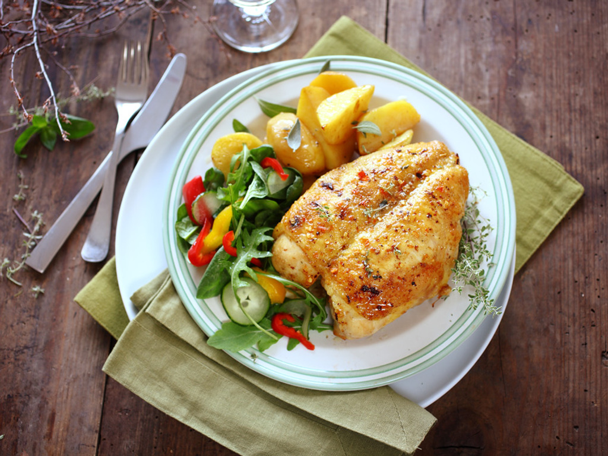

Naše sliepky
Naše vajca
Naše vajca sú z kvalitných sliepok z ktorých potom určite nebude rezeň
Naše vajca sú z kvalitných sliepok z ktorých potom určite nebude rezeň
Naše vajca sú z kvalitných sliepok z ktorých potom učtite nebude rezeň
Naše vajca sú z kvalitných sliepok z ktorých potom určite nebude rezeň
Naši zakaznici
Madar môže byť: maďarský názov obce Modrany hudobný album Jana Garbareka, pozri Madar (Garbarek) priezvisko, pozri Madar (priezvisko), napr.: Csaba Madar (* 1974), maďarský futbalista Mickaël Madar (* 1968), francúzsky futbalista Mohammed Hawadle Madar, somálsky politik, predseda vlády v rokoch 1990 – 1991 Tamás Madar (* 1978), maďarský futbalista.
Negerko
Madar môže byť: maďarský názov obce Modrany hudobný album Jana Garbareka, pozri Madar (Garbarek) priezvisko, pozri Madar (priezvisko), napr.: Csaba Madar (* 1974), maďarský futbalista Mickaël Madar (* 1968), francúzsky futbalista Mohammed Hawadle Madar, somálsky politik, predseda vlády v rokoch 1990 – 1991 Tamás Madar (* 1978), maďarský futbalista.
Negerko
Madar môže byť: maďarský názov obce Modrany hudobný album Jana Garbareka, pozri Madar (Garbarek) priezvisko, pozri Madar (priezvisko), napr.: Csaba Madar (* 1974), maďarský futbalista Mickaël Madar (* 1968), francúzsky futbalista Mohammed Hawadle Madar, somálsky politik, predseda vlády v rokoch 1990 – 1991 Tamás Madar (* 1978), maďarský futbalista.
Negerko
Menu
- 